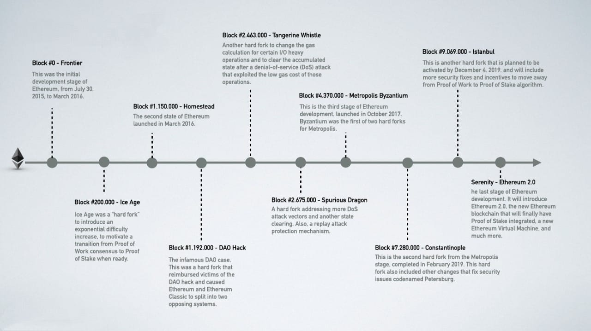

Ethereum is an open source blockchain platform which allows anyone to develop and deploy blockchain based applications. Ethereum is built by the developers for the developers, it is a developers blockchain. Ethereum incorporated all blockchain functionalities in single network and avoided creation of individual blockchain for each purpose.
Development Stages
The development of Ethereum was planned out in four stages, with significant modifications occurring in each stage. Sub releases known as "hard forks" that alter functionality in a non-backward compatible manner may be included in a stage.
Ethereum 2.0
Ethereum 2.0 is a new version of Ethereum blockchain that will use proof of stake consensus algorithm to verify transactions via staking.
Ethereum 2.0 is launched in 2 phase:
- Beacon Chain in December 2020
- Merge in September 2022.
Ethereum - A General Purpose Blockchain
Ethereum is a distributed state machine. It tracks the state transitions of a general-purpose data store, i.e. a store that can hold any data expressible as a key–value tuple. In some ways, this serves the same purpose as the data storage model of Random Access Memory (RAM) used by most general-purpose computers. Ethereum has memory that stores both code and data, and it uses the Ethereum blockchain to track how this memory changes over time. Like a general-purpose stored-program computer, Ethereum can load code into its state machine and run that code, storing the resulting state changes in its blockchain.
Key and Address
Ethereum accounts are classified into two types :
- Externally Owned Account(EOA)
- Contract Account
Externally Owned Accounts are made of public-private key pair. The private key gives control and access to one’s contracts. The private key is kept secured by the user. While, the public key of the account is open. This key acts as the identity of the account. The public key is generated from the private key. The address of an Ethereum account is generated through its public key.This type of account has no code. It has balance in ether.
A contract account has a code for a smart contract. Contract account is identified by its public address. This account does not own a private key.The logic of the smart contract controls this account. The smart contract that is deployed on the Ethereum blockchain is the owner of the contract’s account.